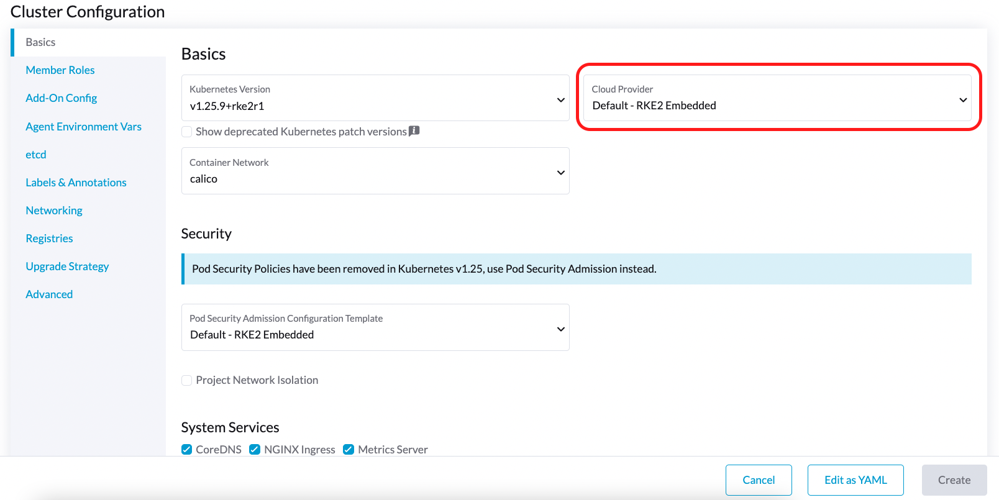
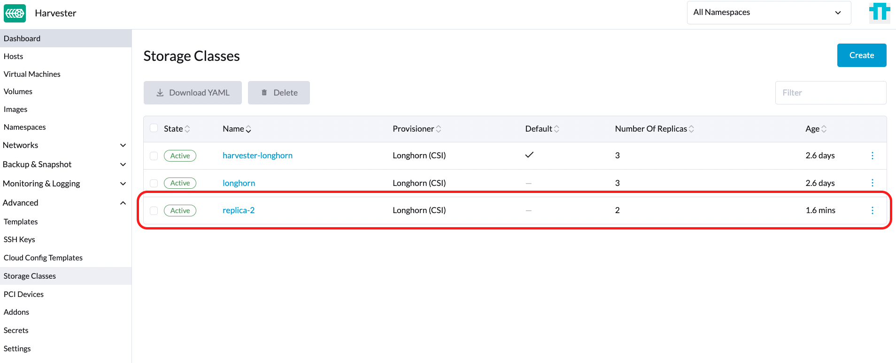
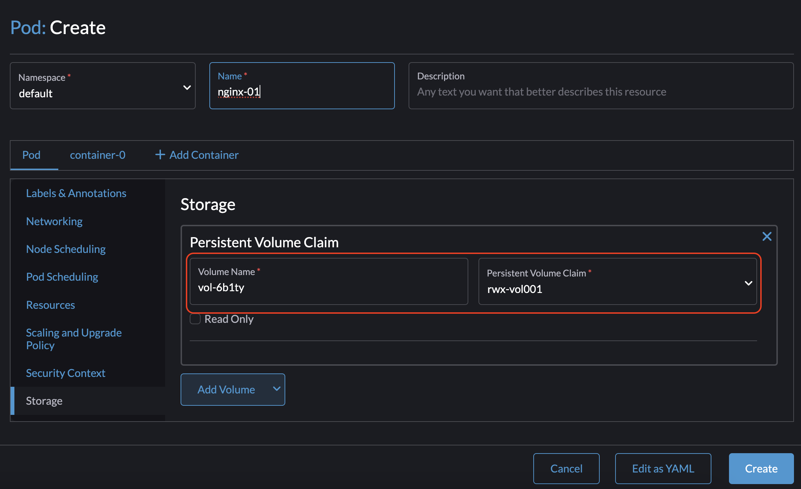
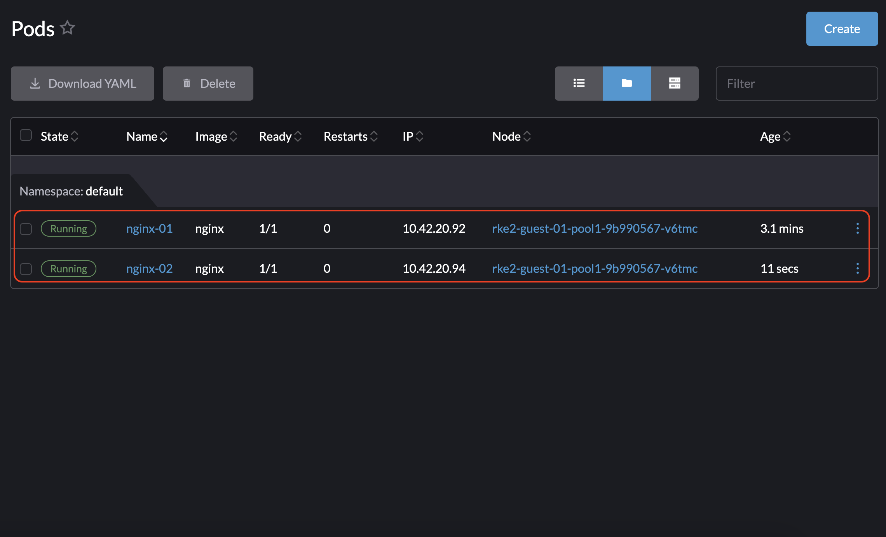

Harvester CSI ドライバー
Harvester コンテナ ストレージ インターフェース (CSI) ドライバーは、ゲスト Kubernetes クラスターで使用される標準 CSI インターフェースを提供します。ホスト クラスターに接続し、ホスト ボリュームを仮想マシンにホットプラグして、ネイティブ ストレージ パフォーマンスを提供します。
Harvester CSI ドライバーは、以下の機能をサポートしています：
| Harvester CSI ドライバー バージョン | SUSE Virtualization バージョン | ストレージ ティアリング | RWX ボリューム | オンライン サイズ変更 | サードパーティ ストレージ | ボリュームのスナップショット |
|---|---|---|---|---|---|---|
0.1.15 |
すべてのバージョン |
✔ |
✖ |
✖ |
✖ |
✖ |
0.1.20 |
v1.4 以降 |
✔ |
✔ |
✖ |
✖ |
✖ |
0.1.24 |
v1.6 以降 |
✔ |
✔ |
✔ |
✔ |
✖ |
0.1.25 |
v1.7 以降 |
✔ |
✔ |
✔ |
✔ |
✔ |
|
Harvester CSI ドライバーの v0.1.20 における 既知の問題 により、ホスト クラスターが v1.4.0 より前にリリースされた SUSE Virtualization バージョンを実行しているときにボリュームがスタックします。 この問題は v0.1.21 で修正されました。システムが影響を受けている場合は、提案された 回避策 に従うことができます。
|
配備
前提条件
-
KubernetesクラスターはSUSE Virtualizationの仮想マシンの上に構築されています。
-
ゲストKubernetesノードとして動作するSUSE Virtualizationの仮想マシンは同じネームスペースにあります。
|
現在、Harvester CSI ドライバーは単一ノードの読み書き（RWO）ボリュームのみをサポートしています。可能なマルチノードの読み取り専用（ROX）および読み書き（RWX）サポートに関する情報は issue #1992を確認してください。 |
Harvester RKE2 ノードドライバーを使用してデプロイする
Rancher RKE2 ノードドライバーを使用して Kubernetes クラスターを立ち上げる際、Harvester クラウドプロバイダーが選択されると、Harvester CSI ドライバーが自動的にデプロイされます。

RKE2 クラスターにCSI ドライバーを手動でインストールする
Harvester クラウドプロバイダーを有効にせずにHarvester CSI ドライバーをインストールすることを希望する場合は、以下の手順を参照してください：
手動インストールの前提条件
以下の前提条件が整っていることを確認してください：
-
システムに`kubectl`と`jq`がインストールされています。
-
ベアメタル Harvester cluster 用の`kubeconfig`ファイルを持っています。`/etc/rancher/rke2/rke2.yaml`パスのHarvester管理ノードのいずれかから`kubeconfig`ファイルを見つけることができます。
export KUBECONFIG=/path/to/your/harvester-kubeconfig
Harvester CSI ドライバーを手動でデプロイするために、以下の手順を実行してください：
Harvester CSI ドライバーをデプロイします。
-
cloud-config`を生成します。 generate_addon_csi.sh スクリプトを使用して `cloud-configファイルを生成できます。 harvester/harvester-csi-driver リポジトリで入手できます。<serviceaccount name>は通常、ゲストクラスター名に対応し、<namespace>はマシンプールのネームスペースと一致する必要があります。./generate_addon_csi.sh <serviceaccount name> <namespace> RKE2
生成された出力は、以下のものに似ています：
########## cloud-config ############ apiVersion: v1 clusters: - cluster: <token> server: https://<YOUR HOST HARVESTER VIP>:6443 name: default contexts: - context: cluster: default namespace: default user: rke2-guest-01-default-default name: rke2-guest-01-default-default current-context: rke2-guest-01-default-default kind: Config preferences: {} users: - name: rke2-guest-01-default-default user: token: <token> ########## cloud-init user data ############ write_files: - encoding: b64 content: YXBpVmVyc2lvbjogdjEKY2x1c3RlcnM6Ci0gY2x1c3RlcjoKICAgIGNlcnRpZmljYXRlLWF1dGhvcml0eS1kYXRhOiBMUzB0TFMxQ1JVZEpUaUJEUlZKVVNVWkpRMEZVUlMwdExTMHRDazFKU1VKbFZFTkRRVklyWjBGM1NVSkJaMGxDUVVSQlMwSm5aM0ZvYTJwUFVGRlJSRUZxUVd0TlUwbDNTVUZaUkZaUlVVUkVRbXg1WVRKVmVVeFlUbXdLWTI1YWJHTnBNV3BaVlVGNFRtcG5NVTE2VlhoT1JGRjNUVUkwV0VSVVNYcE5SRlY1VDFSQk5VMVVRVEJOUm05WVJGUk5lazFFVlhsT2FrRTFUVlJCTUFwTlJtOTNTa1JGYVUxRFFVZEJNVlZGUVhkM1dtTnRkR3hOYVRGNldsaEtNbHBZU1hSWk1rWkJUVlJaTkU1VVRURk5WRkV3VFVSQ1drMUNUVWRDZVhGSENsTk5ORGxCWjBWSFEwTnhSMU5OTkRsQmQwVklRVEJKUVVKSmQzRmFZMDVTVjBWU2FsQlVkalJsTUhFMk0ySmxTSEZEZDFWelducGtRa3BsU0VWbFpHTUtOVEJaUTNKTFNISklhbWdyTDJab2VXUklNME5ZVURNeFZXMWxTM1ZaVDBsVGRIVnZVbGx4YVdJMGFFZE5aekpxVVdwQ1FVMUJORWRCTVZWa1JIZEZRZ292ZDFGRlFYZEpRM0JFUVZCQ1owNVdTRkpOUWtGbU9FVkNWRUZFUVZGSUwwMUNNRWRCTVZWa1JHZFJWMEpDVWpaRGEzbEJOSEZqYldKSlVESlFWVW81Q2xacWJWVTNVV2R2WjJwQlMwSm5aM0ZvYTJwUFVGRlJSRUZuVGtsQlJFSkdRV2xCZUZKNU4xUTNRMVpEYVZWTVdFMDRZazVaVWtWek1HSnBZbWxVSzJzS1kwRnhlVmt5Tm5CaGMwcHpMM2RKYUVGTVNsQnFVVzVxZEcwMVptNTZWR3AxUVVsblRuTkdibFozWkZRMldXWXpieTg0ZFRsS05tMWhSR2RXQ2kwdExTMHRSVTVFSUVORlVsUkpSa2xEUVZSRkxTMHRMUzBLCiAgICBzZXJ2ZXI6IGh0dHBzOi8vMTkyLjE2OC4wLjEzMTo2NDQzCiAgbmFtZTogZGVmYXVsdApjb250ZXh0czoKLSBjb250ZXh0OgogICAgY2x1c3RlcjogZGVmYXVsdAogICAgbmFtZXNwYWNlOiBkZWZhdWx0CiAgICB1c2VyOiBya2UyLWd1ZXN0LTAxLWRlZmF1bHQtZGVmYXVsdAogIG5hbWU6IHJrZTItZ3Vlc3QtMDEtZGVmYXVsdC1kZWZhdWx0CmN1cnJlbnQtY29udGV4dDogcmtlMi1ndWVzdC0wMS1kZWZhdWx0LWRlZmF1bHQKa2luZDogQ29uZmlnCnByZWZlcmVuY2VzOiB7fQp1c2VyczoKLSBuYW1lOiBya2UyLWd1ZXN0LTAxLWRlZmF1bHQtZGVmYXVsdAogIHVzZXI6CiAgICB0b2tlbjogZXlKaGJHY2lPaUpTVXpJMU5pSXNJbXRwWkNJNklreGhUazQxUTBsMWFsTnRORE5TVFZKS00waE9UbGszTkV0amNVeEtjM1JSV1RoYVpUbGZVazA0YW1zaWZRLmV5SnBjM01pT2lKcmRXSmxjbTVsZEdWekwzTmxjblpwWTJWaFkyTnZkVzUwSWl3aWEzVmlaWEp1WlhSbGN5NXBieTl6WlhKMmFXTmxZV05qYjNWdWRDOXVZVzFsYzNCaFkyVWlPaUprWldaaGRXeDBJaXdpYTNWaVpYSnVaWFJsY3k1cGJ5OXpaWEoyYVdObFlXTmpiM1Z1ZEM5elpXTnlaWFF1Ym1GdFpTSTZJbkpyWlRJdFozVmxjM1F0TURFdGRHOXJaVzRpTENKcmRXSmxjbTVsZEdWekxtbHZMM05sY25acFkyVmhZMk52ZFc1MEwzTmxjblpwWTJVdFlXTmpiM1Z1ZEM1dVlXMWxJam9pY210bE1pMW5kV1Z6ZEMwd01TSXNJbXQxWW1WeWJtVjBaWE11YVc4dmMyVnlkbWxqWldGalkyOTFiblF2YzJWeWRtbGpaUzFoWTJOdmRXNTBMblZwWkNJNkltTXlZak5sTldGaExUWTBNMlF0TkRkbU1pMDROemt3TFRjeU5qWXpNbVl4Wm1aaU5pSXNJbk4xWWlJNkluTjVjM1JsYlRwelpYSjJhV05sWVdOamIzVnVkRHBrWldaaGRXeDBPbkpyWlRJdFozVmxjM1F0TURFaWZRLmFRZmU1d19ERFRsSWJMYnUzWUVFY3hmR29INGY1VnhVdmpaajJDaWlhcXB6VWI0dUYwLUR0cnRsa3JUM19ZemdXbENRVVVUNzNja1BuQmdTZ2FWNDhhdmlfSjJvdUFVZC04djN5d3M0eXpjLVFsTVV0MV9ScGJkUURzXzd6SDVYeUVIREJ1dVNkaTVrRWMweHk0X0tDQ2IwRHQ0OGFoSVhnNlMwRDdJUzFfVkR3MmdEa24wcDVXUnFFd0xmSjdEbHJDOFEzRkNUdGhpUkVHZkUzcmJGYUdOMjdfamR2cUo4WXlJQVd4RHAtVHVNT1pKZUNObXRtUzVvQXpIN3hOZlhRTlZ2ZU05X29tX3FaVnhuTzFEanllbWdvNG9OSEpzekp1VWliRGxxTVZiMS1oQUxYSjZXR1Z2RURxSTlna1JlSWtkX3JqS2tyY3lYaGhaN3lTZ3o3QQo= owner: root:root path: /var/lib/rancher/rke2/etc/config-files/cloud-provider-config permissions: '0644' -
cloud-init user dataの内容を Machine Pools > Show Advanced > User Data にコピーして貼り付けてください。
上記の cloud-init ユーザーデータを適用した後、
cloud-provider-configファイルが作成されます。ゲスト Kubernetes ノードのパス/var/lib/rancher/rke2/etc/config-files/cloud-provider-configにあります。 -
Cloud Provider を Default - RKE2 Embedded または External に設定します。

-
Create を選択して RKE2 クラスターを作成します。
-
RKE2 クラスターが準備できたら、Rancher マーケットプレイスから Harvester CSI Driver チャートをインストールします。デフォルトでは cloud-config パスを変更する必要はありません。


|
Rancher を使用して Harvester CSI ドライバーをインストールしたくない場合 (Apps > Charts)、代わりに Helm を使用できます。 Harvester CSI ドライバーは Helm チャートとしてパッケージ化されています。 詳細については、 https://charts.harvesterhci.io.を参照してください。 |
上記の手順に従うことで、kube-system ネームスペースでこれらの CSI ドライバーポッドが稼働しているのを見ることができ、新しい PVC をデフォルトの StorageClass harvester を使用して RKE2 クラスターでプロビジョニングすることで確認できます。
Harvester K3s ノードドライバーでデプロイします。
RKE2 セクションで説明されている [Deploy Harvester CSI driver] 手順に従うことができます。
唯一の違いは、cloud-init 設定を生成する際にプロバイダータイプを k3s として指定する必要があることです：
./generate_addon_csi.sh <serviceaccount name> <namespace> k3sデフォルトの StorageClass をカスタマイズします。
Harvester CSI ドライバーは、デフォルトの StorageClass を定義するためのインターフェースを提供します。デフォルトの StorageClass が指定されていない場合、Harvester CSI ドライバーはホスト Harvester cluster のデフォルトの StorageClass を使用します。
デフォルトのStorageClassをカスタマイズするには、パラメーター host-storage-class を使用できます。
-
ホスト Harvester cluster 用のStorageClassを作成します。
例:

-
パラメーター
host-storage-classを使用して CSI ドライバーをデプロイします。例:

-
Harvester CSI ドライバーが準備完了であることを確認します。
-
*PersistentVolumeClaims*画面でPVCを作成します。*新しい Persistent Volume をプロビジョニングするために StorageClass を使用する*を選択し、作成したStorageClassを指定します。
例:

-
PVCが作成されたら、プロビジョニングされたボリュームの名前をメモし、ステータスが*Bound*であることを確認します。
例:

-
*Volumes*画面で、作成したStorageClassを使用してボリュームがプロビジョニングされたことを確認します。
例:

-
パススルーカスタムStorageClass
Harvester CSIドライバー v0.1.15以降、ゲストKubernetesクラスターで異なるHarvester StorageClassを使用してPersistentVolumeClaim (PVC) を作成することが可能です。
|
互換性のあるHarvester CSIドライバーは、サポートされている各RKE2バージョンに組み込まれています。 |
前提条件
Harvester clusterに以下の前提条件を追加して、Harvester CSIドライバーがエラーメッセージを正しく表示できるようにします。適切なRBAC設定は、特に存在しないStorageClassでPVCを作成する際のエラーメッセージの可視性に不可欠です。以下の画像に示すように:

エラーメッセージの可視性のために*RBAC*を設定する手順は次のとおりです:
-
以下のマニフェストを使用して、
clusterroleという名前の新しいharvesterhci.io:csi-driverを作成します。apiVersion: rbac.authorization.k8s.io/v1 kind: ClusterRole metadata: labels: app.kubernetes.io/component: apiserver app.kubernetes.io/name: harvester app.kubernetes.io/part-of: harvester name: harvesterhci.io:csi-driver rules: - apiGroups: - storage.k8s.io resources: - storageclasses verbs: - get - list - watch -
上記の
clusterroleに関連付けられた新しいclusterrolebindingを、関連するserviceaccountを使用して以下のマニフェストで作成します。apiVersion: rbac.authorization.k8s.io/v1 kind: ClusterRoleBinding metadata: name: <namespace>-<serviceaccount name> roleRef: apiGroup: rbac.authorization.k8s.io kind: ClusterRole name: harvesterhci.io:csi-driver subjects: - kind: ServiceAccount name: <serviceaccount name> namespace: <namespace>
serviceaccount nameとnamespaceがクラウドプロバイダーの設定と一致していることを確認してください。次の手順を実行して、これらの詳細を取得してください。-
クラウドプロバイダーに関連する`rolebinding`を見つけてください：
$ kubectl get rolebinding -A |grep harvesterhci.io:cloudprovider default default-rke2-guest-01 ClusterRole/harvesterhci.io:cloudprovider 7d1h
-
この`rolebinding`から`subjects`の情報を抽出してください：
$ kubectl get rolebinding default-rke2-guest-01 -n default -o yaml |yq -e '.subjects'
-
`ServiceAccount`情報を特定してください：
- kind: ServiceAccount name: rke2-guest-01 namespace: default
-
配備
これで、ゲストKubernetesクラスターで使用する予定の新しいStorageClassを作成できます。
-
管理者の場合、ベアメタル Harvester cluster で希望するStorageClass（例：*replica-2*という名前）を作成できます。

-
次に、ゲストKubernetesクラスターで、Harvester cluster の*replica-2*という名前のStorageClassに関連付けられた新しいStorageClassを作成します：

-
*Provisioner*を選択する際は、*Harvester (CSI)*を選択してください。*Host StorageClass*パラメーターは、Harvesterクラスターで作成されたStorageClass名と一致する必要があります。
-
ゲストKubernetesの所有者の場合、Harvesterクラスターの管理者に新しいStorageClassを作成するよう依頼できます。
-
`Host StorageClass`フィールドを空白のままにすると、HarvesterクラスターのデフォルトStorageClassが使用されます。
-
-
これで、この新しい*StorageClass*に基づいてPVCを作成でき、ベアメタルHarvesterクラスターでボリュームをプロビジョニングするために*Host StorageClass*を利用します。
RWXボリュームサポート
|
RWXボリュームは現在、専用のストレージネットワークでのみ機能します。 Issue #7218は、RWXボリュームがゲストクラスターでさまざまなVLANを使用できるようにする拡張機能を追跡しています。 |
前提条件
-
ホストクラスターにHarvester v1.4以降がインストールされています。
-
Harvesterクラスターにストレージネットワークが構成されています。
*exclude*を使用して、ゲストクラスターの仮想マシン用にIPアドレスの範囲を予約します。

-
組み込みのLonghorn UIでの*RWXボリューム用ストレージネットワーク*設定が有効になっています。
*一般*に移動し、次に*RWXボリューム用ストレージネットワークを有効にする*を選択します。

-
ホストHarvesterクラスターにRWX StorageClassを作成しました。
*ストレージクラスについて:*画面で、*Edit as YAML*をクリックして、次の内容を指定します:
kind: StorageClass apiVersion: storage.k8s.io/v1 metadata: name: longhorn-rwx provisioner: driver.longhorn.io allowVolumeExpansion: true reclaimPolicy: Delete volumeBindingMode: Immediate parameters: numberOfReplicas: "3" staleReplicaTimeout: "2880" fromBackup: "" fsType: "ext4" nfsOptions: "vers=4.2,noresvport,softerr,timeo=600,retrans=5"


-
ロールベースのアクセス制御（RBAC）設定は最新です。
RBAC認可は、コンピュータまたはネットワークリソースへのアクセスに関する認可決定を行うために特定のKubernetes APIグループを使用します。
Harvester CSIドライバーは、RWXボリュームをサポートするために新しいRBAC設定を必要とします。RBAC設定を確認するには、コマンド`kubectl get clusterrole harvesterhci.io:csi-driver -o yaml`を実行します。
# kubectl get clusterrole harvesterhci.io:csi-driver -o yaml apiVersion: rbac.authorization.k8s.io/v1 kind: ClusterRole metadata: ... name: harvesterhci.io:csi-driver ... rules: - apiGroups: - storage.k8s.io resources: - storageclasses verbs: - get - list - watch - apiGroups: - harvesterhci.io resources: - networkfilesystems - networkfilesystems/status verbs: - '*' - apiGroups: - longhorn.io resources: - volumes - volumes/status verbs: - get - list -
networkfs-managerポッドは実行中です。
networkfs-managerポッドのステータスを確認するには、コマンド`kubectl get pods -n harvester-system | grep networkfs-manager`を実行します。
例:
# kubectl get pods -n harvester-system | grep networkfs-manager harvester-networkfs-manager-2pxhm 1/1 Running 4 (34m ago) 3h41m harvester-networkfs-manager-8tst2 1/1 Running 4 (37m ago) 3h41m harvester-networkfs-manager-xvkgp 1/1 Running 4 (37m ago) 3h41m -
Harvester CSIドライバーのバージョンはv0.1.20以上です。

-
仮想マシンには2つのネットワークインタフェースがあります。1つはクラスター内通信およびインフラストラクチャネットワーク（Harvesterクラスター外部）からのアクセスを許可するデフォルトのネットワークインタフェース、もう1つはストレージネットワークに接続できるネットワークインタフェースです。
NAD *default/vlan101*はストレージネットワークに使用されます。

-
NFSクライアントは、ゲストクラスターの各ノードにインストールされています。
NFSクライアントをインストールするには、次のコマンドのいずれかを実行してください。
-
DebianおよびUbuntu:
apt-get install -y nfs-common -
CentOSおよびRHEL:
yum install -y nfs-utils -
SUSEおよびOpenSUSE:
zypper install -y nfs-client
-
-
ストレージネットワークインタフェースに手動でIPが割り当てられています。
次のコマンドを使用して、予約されたIPのいずれかを割り当てることができます:
$ ip link set <storage network nic> up $ ip a add <reserved IP> dev <storage network nic>
指定されたコマンドを使用して割り当てたIPは、再起動後に保持されません。IPを永続化するには、ゲストオペレーティングシステムのネットワーク設定ファイルに追加する必要があります。
使用方法
-
ゲストクラスターに新しいStorageClassを作成します。
*StorageClass:Create*画面で、*Host StorageClass*パラメーターを追加し、ホストHarvesterクラスターで作成したRWX StorageClassを指定します。

-
RWX PersistentVolumeClaim (PVC)を作成します。
*PersistentVolumeClaimの上で：Create*画面で、次の設定を行います：
-
*ボリュームクレーム*タブ：新しいStorageClassを指定します。

-
*カスタマイズ*タブ：*複数ノードの読み書き*を選択します。

-
-
RWX PVCが正常に作成されたことを確認します。

-
2つのポッドを作成します。
*Pod:Create*画面で、RWX PVCを指定します。



|
ゲストクラスターでRWX PVCを作成するために同じ手順を踏むことができ、その後RWXボリュームを必要とするポッドで使用できます。 |
オンラインボリュームのサイズ変更
基盤となるストレージプロバイダーがオンラインボリューム拡張をサポートしている場合、実行中のワークロードに接続されている間でも、ゲストクラスター内のReadWriteOnce (RWO)ボリュームを拡張できます。
ボリュームのスナップショット
*v0.1.25*以降、Harvester CSIドライバーは ボリュームスナップショットをサポートし、ゲストKubernetesクラスターで実行されているワークロードのための時点バックアップおよび復元機能を提供します。
CSIドライバーをアップグレードする
|
Harvester CSIドライバーは、バージョン*v0.1.25*からボリュームスナップショットをサポートしています。この機能を使用するには、Kubernetesディストリビューションに応じて追加の手順が必要な場合があります。
|